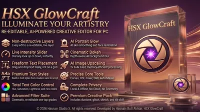
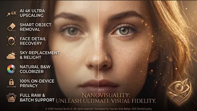
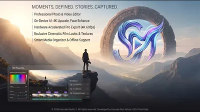
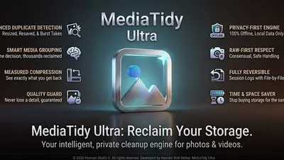
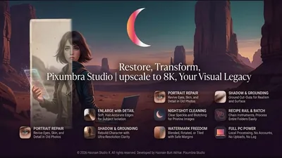

Photo editing and batch imaging apps for Windows
Finishing a folder of pictures rather than perfecting a single one. Batch editing, background removal, repair, retouching and clearing out the duplicates that accumulate behind all of it.
Why these run on your own machine
Photo work is the clearest case for keeping processing local, because the folder in question is usually personal, commercially sensitive, or both. Product photography before a launch and family pictures are the same problem from opposite ends. Nothing here uploads a picture in order to work on it, and nothing retains one afterwards.
What to check before you buy anything in this category
- Whether pictures are uploaded to be processed
- Most one-click online editors work by receiving the image. For product shots or personal photos, that is the deciding question.
- Whether it handles a whole folder
- Editing one picture at a time is a different job from finishing two hundred. Batch capability is what actually saves the day.
- Whether the original survives
- Good tools write a new file. Anything editing in place without asking is a risk.
5 photo & imaging applications available now

HSX GlowCraft Windows Local photo editor with on-device AI tools Photo editing with local AI enhancement tools All edits and AI processing run on your own hardware Photos never uploaded or transmitted externally Full details
HSX NanoVisuality Windows Seventeen photo finishing tools on one local deck Upscale at two or four times the size, rebuilding detail rather than stretching pixels Object removal that paints out a sign, a bin or a stranger and fills the gap Sky replace with six drawn skies, and the rest of the frame warmed to match Full details
HSX PhotoVidix Windows Organise, edit, and export photos and videos One local library for photos and videos Editing and export tools, including SRT captions EXIF and GPS metadata read on device only Full details
MediaTidy Ultra Windows Find duplicate photos and reclaim disk space Duplicate and near-duplicate detection with tunable thresholds Quarantine mode so nothing is deleted outright Media compression with the original kept for undo Full details
Pixumbra Studio Windows Batch photo workroom with cutout, repair and recipes Cutout with a soft, hair-accurate edge, single file or whole folder Portrait repair that brings eyes, skin and hair back in old photographs Enlarge that rebuilds detail, in a photograph character and a crisp character Full detailsQuestions about photo & imaging apps
Are my photos uploaded anywhere?
No. Every editing and retouching step runs on your own machine, so nothing is transmitted and nothing is stored elsewhere.
Can these process a whole folder at once?
Batch work is the point of this part of the catalogue. Each application states what it can process in bulk on its own page.
Are the originals overwritten?
No. Output is written as new files unless you specifically ask otherwise.
Is there a monthly fee?
No. Free trial, then a single purchase.
Other parts of the catalogue
Full Windows catalogue · Privacy policies · About the studio
Hasnain Studio X® is a registered trademark. Product names shown on this page are trademarks of Hasnain Studio X.